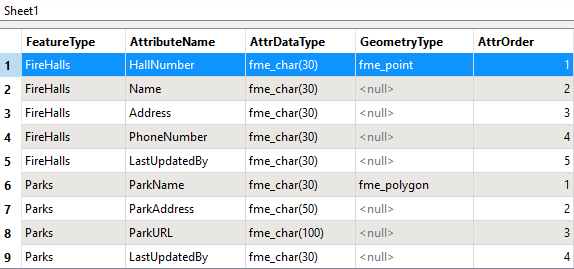
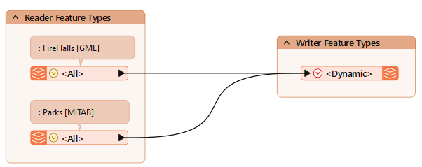
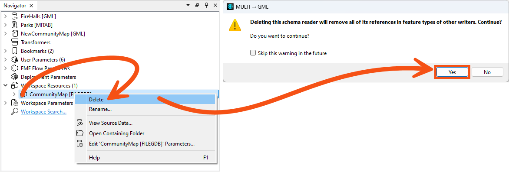
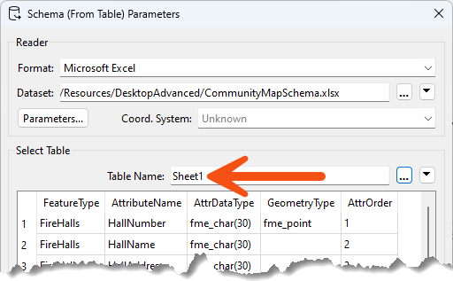
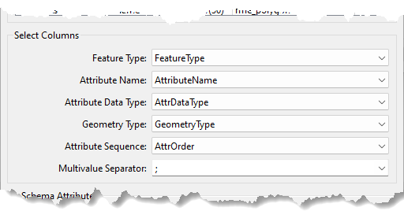
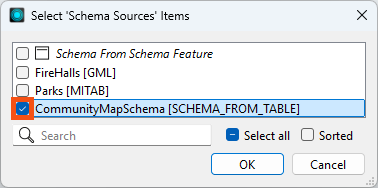
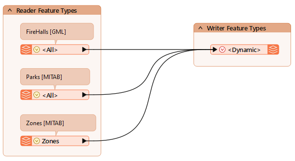
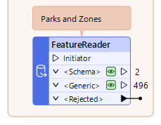
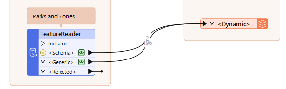
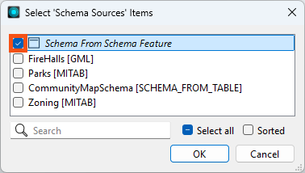

Learning Objectives
After completing this lesson, you'll be able to:
- Set up a spreadsheet for use as a dynamic translation schema.
- Use the Schema (from Table) reader to read a schema from a spreadsheet.
- Use the Schema From Schema Feature schema source to use schema from a schema feature.
In this lesson, you will:
- Optional: Watch a demonstration video (it repeats what we cover in live training).
- Scroll down to read the activity instructions below and, if it has an exercise, follow the steps in your lab.
- Complete the quiz at the end of this lesson.
- Click 'Next' to mark the lesson complete.
Resources
- Starting workspace
- If your computer has FMEData, the file path is C:\FMEData\Workspaces\AdvancedReadingAndWriting\define-schema-from-a-schema-table-or-schema-feature.fmw
- Completed workspace
- C:\FMEData\Workspaces\AdvancedReadingAndWriting\define-schema-from-a-schema-table-or-schema-feature-complete.fmw
- CommunityMapSchema.xlsx
- C:\FMEData\Resources\DesktopAdvanced\CommunityMapSchema.xlsx
- Zoning.zip
- C:\FMEData\Data\Zoning\Zones.tab
Exercise

Jennifer's community map workspace now writes two tables, and the planning department has a third to add. Rather than editing the workspace every time a dataset appears, she wants the output schema defined in a spreadsheet the planning team can own themselves, without ever opening FME.
In this exercise, you will:
- Define an output schema from an external table using a Schema (From Table) resource reader.
- Use a FeatureReader's schema feature to drive a dynamic writer.
1) Open the Workspace and Inspect the Schema Spreadsheet
The spreadsheet is the whole point of this exercise, so it is worth reading before touching the workspace. Each row is one attribute, and the columns say which table it belongs to and what type it is.
- Open CommunityMapSchema.xlsx, or C:\FMEData\Resources\DesktopAdvanced\CommunityMapSchema.xlsx.
- Without Excel, open it in the FME Data Inspector and switch to Table View.
- The table defines Firehalls, Parks, and Zones. Each attribute is its own row, carrying its type and order. The geometry type is defined only once per table.

- Start FME Workbench 2026.2 or later and open the workspace from the previous lesson, or the starting workspace.

2) Replace the Resource Reader
The spreadsheet takes over the job the community map geodatabase was doing, so the old resource reader goes and a new one takes its place. The format to pick is the one that trips people up.
- In the Navigator, right-click the CommunityMap resource reader and select Delete, then click Yes to confirm.

- Select Build > Readers > Add Reader as Resource and configure the following parameters:
- Click Parameters.
- nder Select Table, set Table Name to Sheet1 if it is not already selected.

- Match each field to the parameter it supplies, for example Feature Type to FeatureType.
- The columns can be named anything. Here they match the parameter names to make the relationship obvious. Geometry Type and Attribute Sequence are optional.

3) Set the Writer Schema Sources
The writer still points at the readers for its schema. Switching it to the spreadsheet is what puts the planning team in control of the output structure.
- Open the properties for the writer feature type.
- On the User Attributes tab, remove the LastUpdatedBy attribute.
- The spreadsheet now defines it for every type, so it is no longer needed here.
- On the Parameters tab, click the Schema Sources edit button, clear FireHalls and select CommunityMapSchema [SCHEMA_FROM_TABLE].
- Click OK.

4) Add the Zones Reader
The spreadsheet already describes a Zones table, but nothing is reading that data yet. This time it is a real reader, not a resource.
- Select Build > Readers > Add Reader and configure the following parameters:
- Reader Format: MapInfo TAB (MITAB)
- Reader Dataset: the Zoning.zip download, or C:\FMEData\Data\Zoning\Zones.tab
- Connect its reader feature type to the dynamic writer feature type.

5) Run the Workspace
All three tables should now come out with the structure the spreadsheet describes. What they will not have is data in the new columns, and that gap is deliberate.
- Save the workspace.
- Click Run.
- Inspect the output.
- All three feature types are written, and their attribute schema matches the spreadsheet, LastUpdatedBy included.
- Every attribute defined only in the spreadsheet is empty, because nothing yet links the external schema to the incoming data. A SchemaMapper or SchemaScanner is what closes that gap.
- Selecting View Written Data opens the Select Dataset to View dialog. Specify the format and dataset to see the data. The Tips at the end of this exercise explain why FME asks.
6) Read Data with a FeatureReader
A spreadsheet is one way to supply a schema. A FeatureReader is another, and it produces the schema and the data together, which is worth seeing side by side with what you just built.
- Add a FeatureReader.
- As of FME 2025.2, the FeatureReader has an optional Initiator port, so you don't need to use a Creator with it.
- Open the FeatureReader parameters.
- Configure the following parameters:
- Reader > Format: Precisely MapInfo TAB (MITAB)
- Reader > Dataset: choose one:
- https://s3.amazonaws.com/FMEData/FMEData/Data/Parks.zip,https://s3.amazonaws.com/FMEData/FMEData/Data/Zoning.zip
- C:\FMEData\Data\Zoning\Zones.tab,C:\FMEData\Data\Parks\Parks.tab
- If you paste the paths in, delete the double quotation marks FME adds at each end or the reader errors.
- Output Ports: Single Output Port - <Generic>
- Click OK and click Run.
- If you get an error, check your FeatureReader > Reader > Dataset path. It should match one of the options shown above and should not have double quotation marks.
- The <Schema> port carries two schema features, with unexposed attributes describing the schema.
- The <Generic> port carries every feature from both datasets, also with unexposed attributes, plus fme_feature_type naming the source table as Parks or Zones.

7) Add a Second Dynamic Writer
Those two ports are all a dynamic writer needs: one supplies the structure, the other the rows. Wiring both into one writer reproduces the source tables without a schema being defined anywhere in the workspace.
- Select Build > Writers > Add Writer and configure the following parameters:
- Writer Format: OGC GML (Geography Markup Language)
- Writer Dataset: C:\FMEData\Output\Training\NewCommunityMapSchemaFeature.gml
- Feature Type Definition: Dynamic (Advanced)
- Click OK, move the new writer feature type beside the FeatureReader, and connect both the <Schema> port and the <Generic> port to it.

- Open the new writer feature type parameters, click the ellipsis beside Schema Sources and select only Schema From Schema Feature.
- It already uses fme_feature_type to name the destination feature types, which is what you want. It is the schema source that needs changing.
- Click OK twice.

8) Re-Run the Entire Workspace
A partial run can let cached data reach the writer before the schema does, and the schema has to arrive first. Re-running everything is what guarantees the order.
- Select Run > Rerun Entire Workspace.
- Inspect the output of the new <Dynamic> writer feature type.
- Parks and Zoning are written to GML with their original schemas and values.
You have defined an output schema two different ways: from a spreadsheet the planning team maintains, and from a schema feature a FeatureReader produces at run time. Neither approach requires the workspace to know the structure of the data in advance.
Tips
- The schema feature route writes out anything a FeatureReader reads, without a SchemaMapper or SchemaScanner and without altering the underlying schema. It is limited to one output format here, but pairing it with a Generic writer or several writers handles more.
- Column names in a schema table are arbitrary. Matching them to the parameter names, as this spreadsheet does, just makes the mapping easier to read later.
- Selecting View Written Data on a dynamic or generic writer feature type usually opens the Select Dataset to View dialog, because FME does not know the format or path in advance. Specify the format and dataset to view the data. The same happens with a writer feature type fanout, where the output path depends on an attribute value FME only reads at run time.